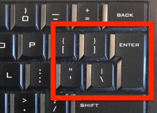
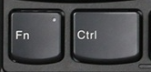
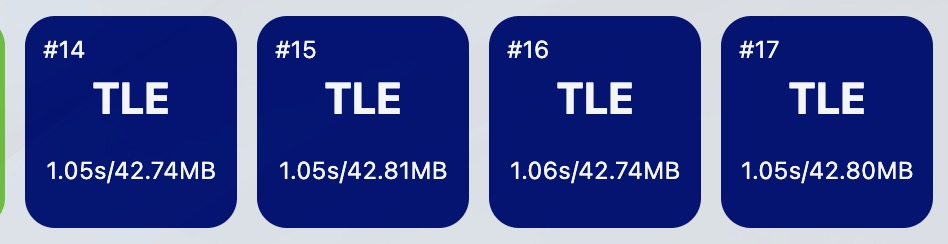

RNM，退栈！
$\text{Day}\,-???$
$\text{NOIp}$ 打的太烂，想着省选好好打或许能在 JS 拿个 D 类去体验一下 $\text{NOI}$ 的来着。
看到 noi.cn 官网上的通知，说由于疫情原因 $\text{ZJOI}$ 要初中生 $180$ 分以上才能参加。幸好自己没有生在 ZJ。
$\text{Day}\,-??$
这天下午，我正在机房愉快地做题，洛谷上突然出现了关于 JSOI2022 提高 NOIp 分数线 的消息。$230$ 分，比 ZJ 还高？
于是我预感到自己要成为第一批冲刺 $\text{NOIp}$ $2022$ 的 OIer。
$\text{Day}\,-?$
好消息，$\text{JSOI}$ $2022$ 分数线比 $230$ 低。
坏消息，$\text{JSOI}$ $2022$ 分数线比我的 $\text{NOIp}$ 得分高。
$\text{Day}\,0$
由于学校还是主办方，有幸获得了 场外同步赛 的参加资格。代价是要当志愿者并穿着 红色马甲（过于社死）。
于是比正式选手早了 $1h$ 到试机，按照主办方的要求帮忙给电脑整理键盘鼠标还有插显示器的线（要接一个 HDMI 转 VGA 再加一个 VGA 转 DVI，显示器的设计很不合理，要歪着才能把 DVI 接上去，插的手生疼的）。
顺嘴提一句，由于无法在学校机房举办省选，电脑采用的是奇怪的配置：
ThinkPad笔记本 X13 13.3英寸
CPU: i5-10210U
内存: 8GB
然后外接一个显示器和键盘鼠标
虽说配置还不算太差，毕竟 Intel $10$ 代 U 好像挤了一大管牙膏的来着。
虽说外接了一个显示器和键盘鼠标还是挺舒服的，甚至还能和笔记本显示器双屏。
虽说只能用 NOI-Linux 而且 Windows 下没有 IDE，但对我一个平常不用 Windows 的人来说没啥区别的。
虽说是虚拟机…… 等等，虚拟机？
考虑下性能损失，官方标准少爷机的 i7-8700K 比低压 i5 虚拟机不知道快到哪里去了。赛时的运行速度失去参考价值（为下文做铺垫）。
由于是虚拟机，也就失去了搞双屏编程的办法（虽然影响不大）。
而键盘的布局是这样的：

我无 Fu 可说。
试机的时候试了下鬼畜的键盘，总是在换行的时候不小心同时按到 \ 和 Enter，输入 \n 的时候也经常按到回车。
我大 NFLS 连 $80$ 个键盘都买不起？？？
（不过键盘的手感还是不错的）
我当时认为这样的键盘会对我的发挥有一些影响，于是尝试用 ThinkPad 的笔记本键盘。

好吧更不习惯……
RNM，退钱！
$\text{Day}\,1$
来到了比赛地点的外侧，而现在跟我一起等待着比赛开始的，还有我身后这一圈，这里这么多的 OIer，大家都在等待着题目的出来。
虚拟机时间和真实时间相差了 $15min$，差评！
T1 大模拟，普及组难度的那种，放到省选…… 快速敲完就去测了大样例，啪地一下就全都过了，很快啊。
对于 $0\%$ 的数据和 $100\%$ 的大样例，保证 $n \le 5$
好强的大样例啊！这样一定能卡掉不少选手。而且既然是普及组难度的大模拟，也就没有办法对拍。
T2 常规题好吧，省选正常难度的区分题（我没做出来），还是不错的，有大样例。
T3 是神仙题，我第一次见到有正式比赛白送 $20pts$，然而我没有注意到那个 保证有解。
于是 Day1 很快过去了，人均 $168$ 而我 $138$。
$\text{Day}\,2$
如果早知道，今年省选比去年难那么多的话
T1 好不容易想到了 FWT 的“正解”，写+调+对拍花了我 $2h$，同样的没有大样例。对拍造出来的数据有一半输出是 0。
并且上文已经提到虚拟机中的运行时间没有参考价值，于是我

说好不卡常的啊！$100pts \to 65pts$ 血亏（如果正式赛可以考虑申诉吧大概）。
T2 是个树上贪心结论题，一个一个 $n=2$ 的大样例，一个一个菊花图的大样例，嗯哼哼啊阿啊阿啊阿啊阿啊！
很不幸，我 $32pts$ 挂成了 $12pts$，而且是暴力写挂了！
T3 没啥好说，也不是我能做出来的那种题。
$\text{Day}\,???$
RNM，我是非正式选手，我没交钱
D 类，嘤嘤嘤，我的 D 类！